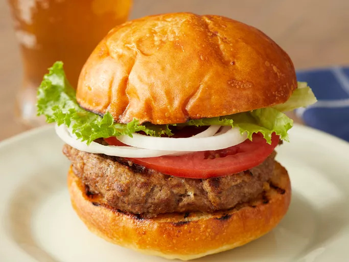

Burger Recipe

How to Make a Burger ?
Making burger can be time-consuming, but the results are well worth the wait. You'll find a detailed ingredient list and step-by-step instructions in the recipe below, but let's go over the basics:
Ingredients
- 1 large egg
- 1/2 tea s salt
- 1/2 tea s ground black pepper
- 1 pound ground beef
- 1/2 cup fine dry bread crumbs
Steps
- Preheat an outdoor grill for high heat and lightly oil grate.
- Whisk together egg, salt, and pepper in medium bowl.
- Add ground beef and bread crumbs and mix with your hands or a fork until well blended.
- Form into four 3/4-inch-thcik patties
- Place patties on the preheated grill. Cover and cook 6 to 8 minutes per side, or to desired doneness. An instant-read thermometer inserted into the center should read at least 160 degrees F (70 degrees C).
- Serve and enjoy !